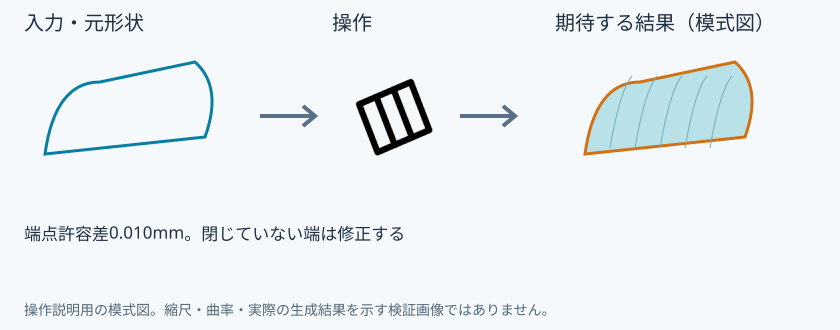
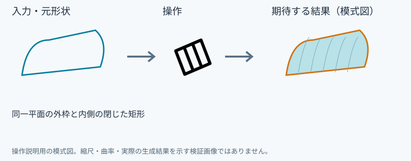
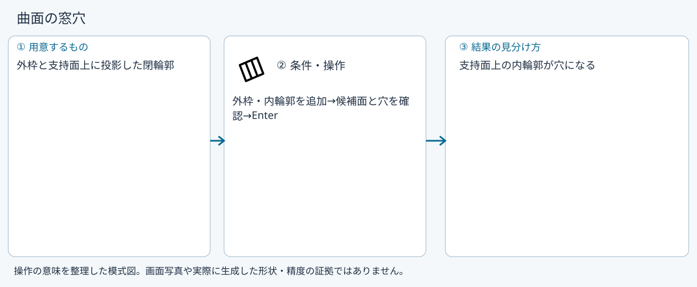
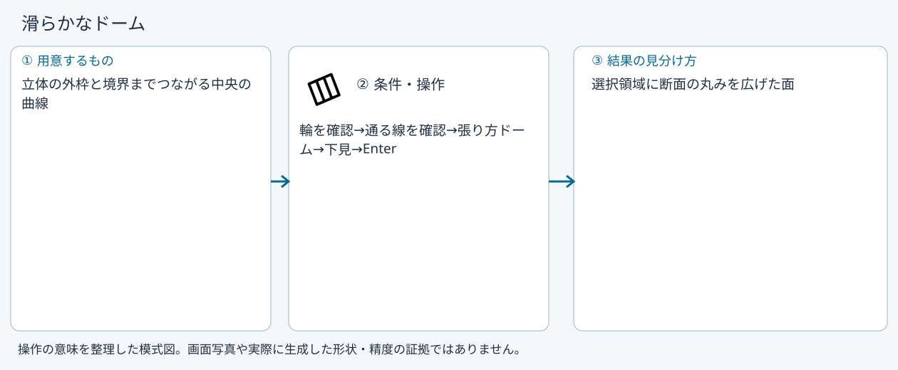

面にする
面にする
具体例: 外枠から窓穴のある面を作る

準備
外周の閉じたワイヤーと内側の窓輪郭を同じ面上に用意する
操作手順
- 面にするを選ぶ
- 外枠と窓の輪郭を追加する
- プレビューの穴を確認して確定する
設定: 端点許容差0.010mm。閉じていない端は修正する
結果を確認
外枠を満たし、内側の輪郭を穴として残す。曲面では投影先との一致も確認する。
取消・やり直し
未確定入力をEscで取り消します。道具を終えるときは選択(V)または別の道具へ切り替えます。 確定済みの文書変更はCtrl+Z、やり直しはCtrl+Yです。保存・書出し済みのファイルはUndoの対象ではありません。
進めない場合
線を1つ以上選んでください。
対象欄と3Dの強調を照合し、必要な線・面・部品を各役割へ指定します。処理中は計算表示を確認し、取消が可能な処理は取消を使います。
平面の窓穴
準備: 同一平面の外枠と内側の閉じた矩形

- 両輪郭を選ぶ
- 面にする
- 穴を確認
- Enter
確認: 窓穴のある面
曲面の窓穴
準備: 外枠と支持面上に投影した閉輪郭

- 外枠・内輪郭を追加
- 候補面と穴を確認
- Enter
確認: 支持面上の内輪郭が穴になる
滑らかなドーム
準備: 立体の外枠と境界までつながる中央の曲線

- 輪を確認
- 通る線を確認
- 張り方ドーム
- 下見
- Enter
確認: 選択領域に断面の丸みを広げた面
Windows版の操作画面